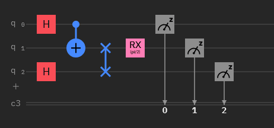

Quantum circuits
Registers
In quantum computing, we speak of registers to indicate what type of information is recorded and used. We speak in particular of “classical register” for bits and of “quantum register” for qubits.
Quantum circuit
A quantum circuit is a circuit in which a quantum register and possibly a classical register evolve over time.
We represent a quantum circuit with a diagram that shows the evolution of qubits and bits over time.
It is also on this diagram that we represent the quantum gates to better analyze the transformations of the qubits.
Example of a quantum circuit:
{kind=link}
In this representation, we observe that the quantum circuit is composed of 2 parts. * | An upper part regarding the quantum register where we see the evolution of each qubit (q0, q1, q2) * | A lower part regarding the classic register where the bits (c3) are stored. (3 being the number of bits)
We notice in this circuit that there are 3 qubits in the quantum register, and 3 bits in the classical register.
We can therefore store the final value of a qubit in a bit at the output of the circuit.
- By default, all qubits in a circuit are initialized to 0.
- This means that the qubit has a 100% chance of being 0 and a 0% chance of being 1.
- The initial state vector is therefore [1, 0] .
During their journey in the circuit, the qubits will be able to cross quantum gates which will modify their state.
To store the value of a qubit in a bit, we will perform a measurement on the qubit, here represented by the icon:
{kind=link}
- This action has the effect of “freezing” the qubit in a state, so that if the qubit is measured a second time in a row, the same value is observed.
- However, it is possible to modify the qubit again by applying a new quantum gate following the measurement.
Note
Now that we know how a quantum circuit works, we need to be able to create and use them. For this, IBM has developed a python library called “Qiskit”.